224次配置，执行/指标失败0次。合成教学模型，未经硬件验证。
同一对象/场景共用信号、采样、噪声与限幅。参数按对象固定，未按场景重新调参；各算法未统一优化，不能据此判定算法普遍优劣。
波形是预先采样并零阶保持的输入。持续变化参考/持续扰动使用tracking_only，恢复指标为不适用。
通用CSV列名与单位表一起读取；NIAE=IAE/(参考尺度×评价时长)，NRMSE=RMSE/尺度。失败指标为null，不计零分。
本轮完整窗口误差包含起步过程，不能把扰动场景的IAE直接解释为纯扰动效应；隔离扰动效应需要与同参考的无扰动轨迹配对分析。
| 对象 | 输出 | 输入 | 扰动 |
|---|---|---|---|
| first_order | unit | unit | unit |
| reduced_motor | rad/s | V | N m |
| inductive_motor | rad/s | V | N m |
| mass_spring_damper | m | N | N |
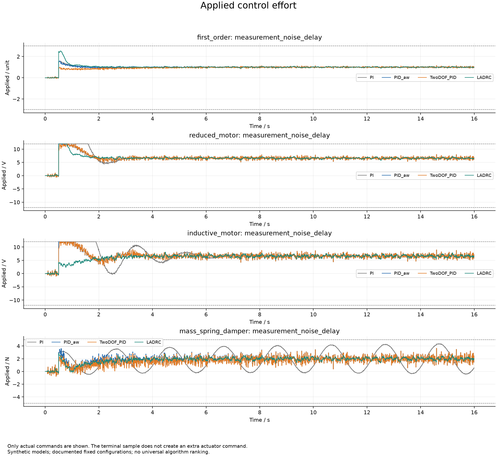
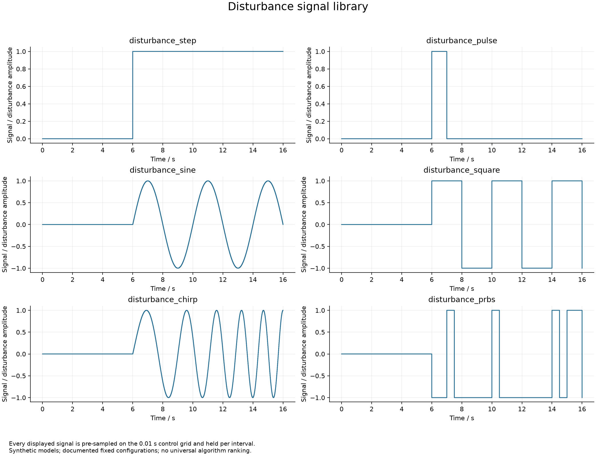
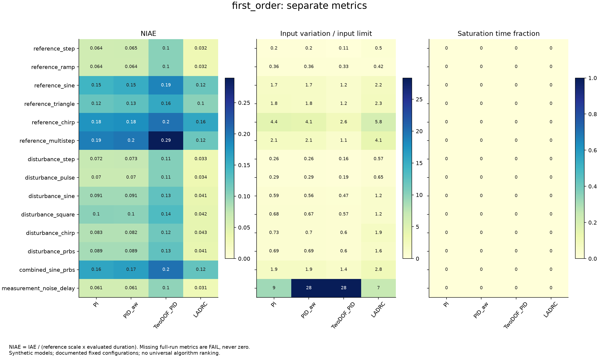
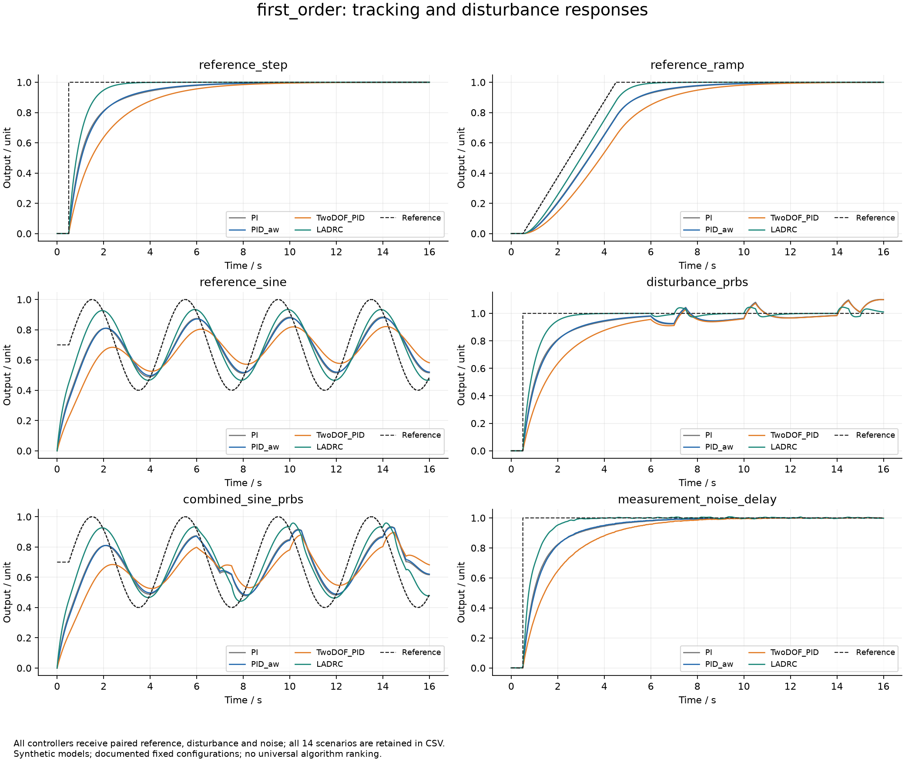
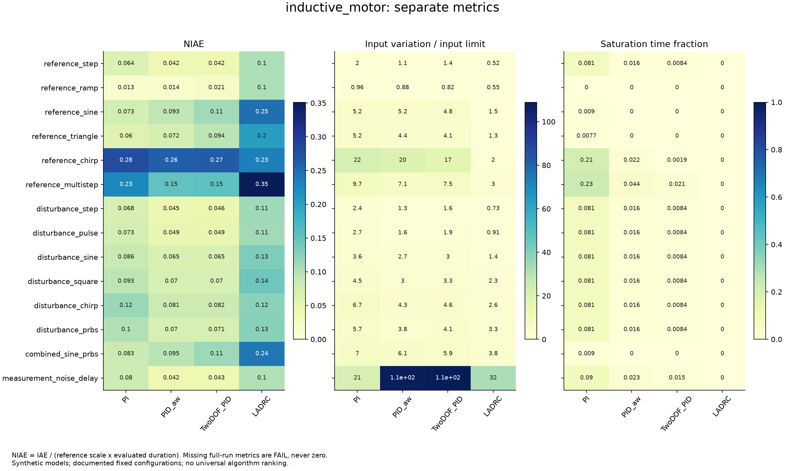
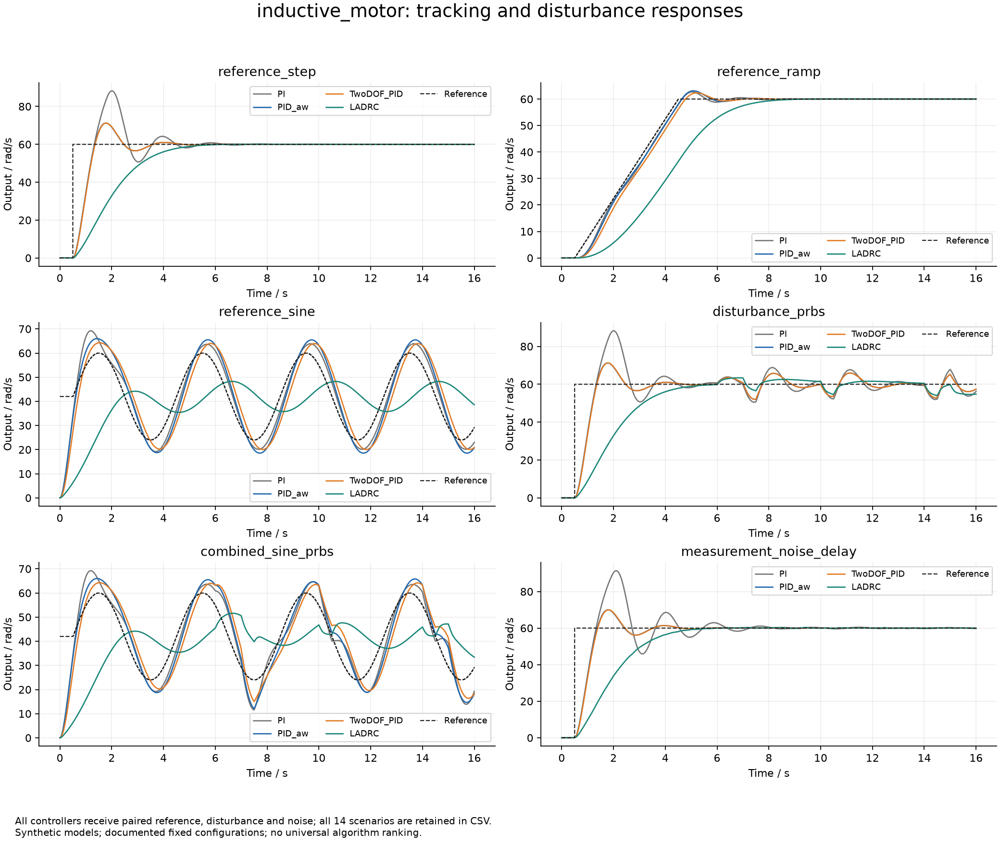
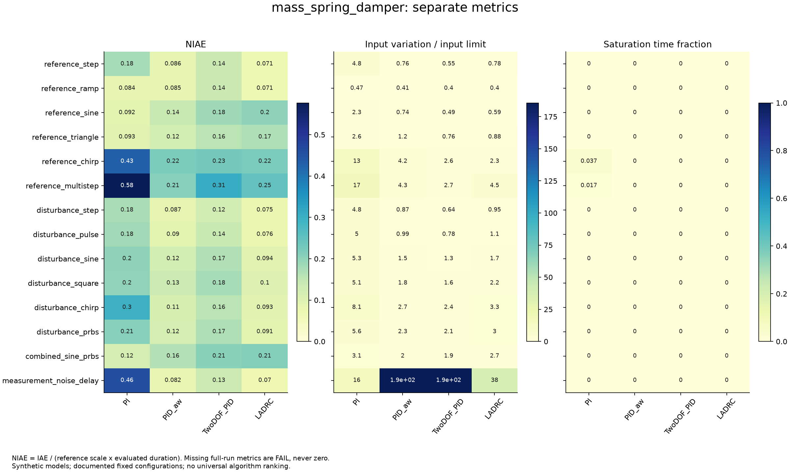
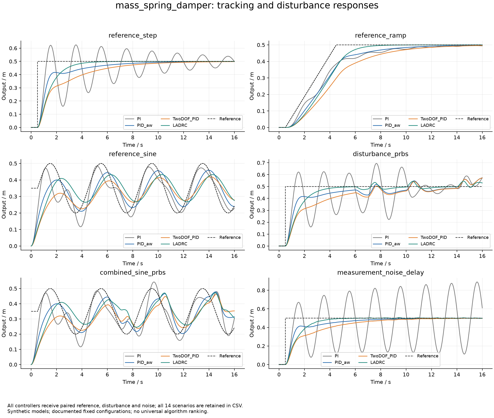
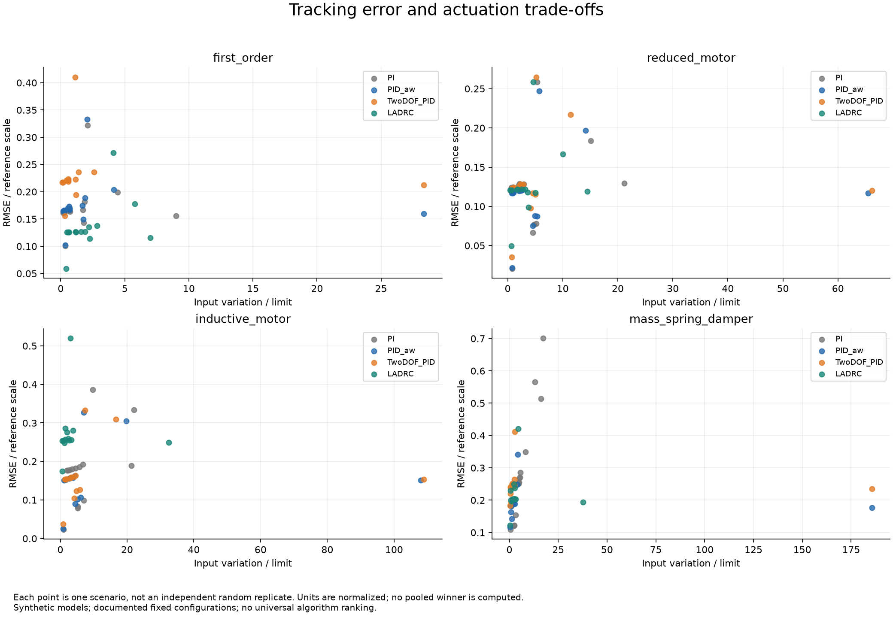
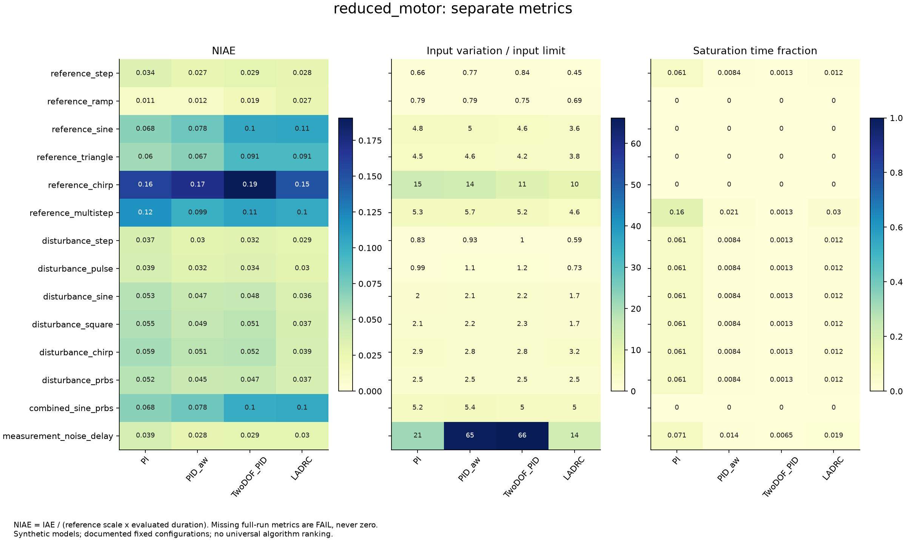
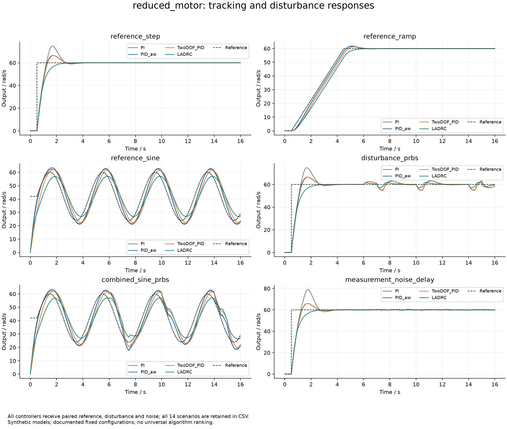
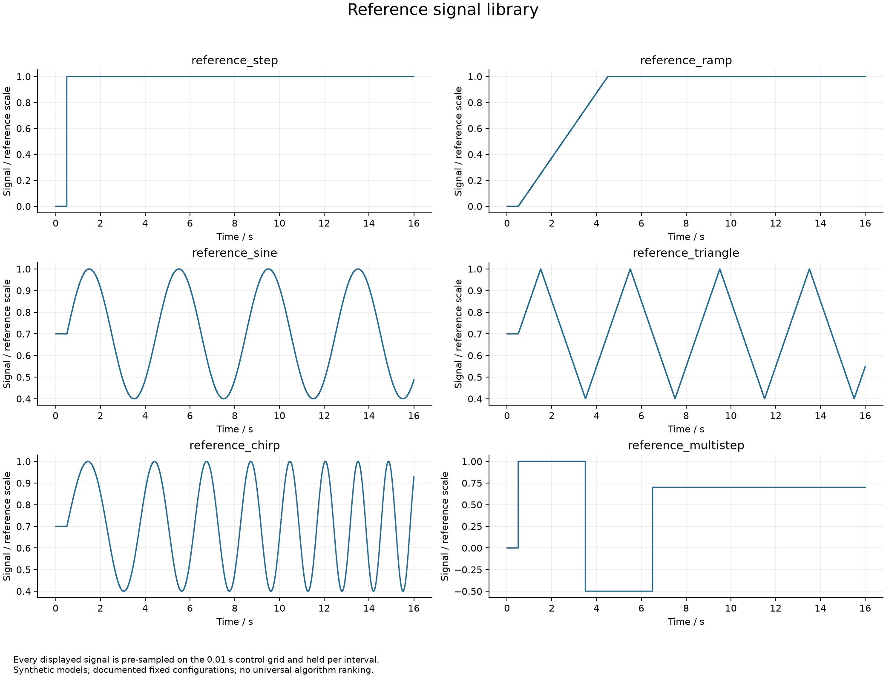
| 配置 | 执行状态 | NIAE | 恢复判定 | 数据 |
|---|---|---|---|---|
| first_order__reference_step__PI | completed | 0.0644972730291566 | recovered_in_observation_window | CSV · 配置 |
| first_order__reference_step__PID_aw | completed | 0.06450313286941063 | recovered_in_observation_window | CSV · 配置 |
| first_order__reference_step__TwoDOF_PID | completed | 0.10319464336441346 | recovered_in_observation_window | CSV · 配置 |
| first_order__reference_step__LADRC | completed | 0.032258064516125874 | recovered_in_observation_window | CSV · 配置 |
| first_order__reference_ramp__PI | completed | 0.0644559396351265 | recovered_in_observation_window | CSV · 配置 |
| first_order__reference_ramp__PID_aw | completed | 0.06447259728823704 | recovered_in_observation_window | CSV · 配置 |
| first_order__reference_ramp__TwoDOF_PID | completed | 0.10312142307377332 | recovered_in_observation_window | CSV · 配置 |
| first_order__reference_ramp__LADRC | completed | 0.03225806451519747 | recovered_in_observation_window | CSV · 配置 |
| first_order__reference_sine__PI | completed | 0.14585162363631426 | not_applicable_tracking_only | CSV · 配置 |
| first_order__reference_sine__PID_aw | completed | 0.152879468097023 | not_applicable_tracking_only | CSV · 配置 |
| first_order__reference_sine__TwoDOF_PID | completed | 0.18986637037597925 | not_applicable_tracking_only | CSV · 配置 |
| first_order__reference_sine__LADRC | completed | 0.1208244124168916 | not_applicable_tracking_only | CSV · 配置 |
| first_order__reference_triangle__PI | completed | 0.12129914327469987 | not_applicable_tracking_only | CSV · 配置 |
| first_order__reference_triangle__PID_aw | completed | 0.12700593786324924 | not_applicable_tracking_only | CSV · 配置 |
| first_order__reference_triangle__TwoDOF_PID | completed | 0.1579758607214818 | not_applicable_tracking_only | CSV · 配置 |
| first_order__reference_triangle__LADRC | completed | 0.10276882605525799 | not_applicable_tracking_only | CSV · 配置 |
| first_order__reference_chirp__PI | completed | 0.1769282745674224 | not_applicable_tracking_only | CSV · 配置 |
| first_order__reference_chirp__PID_aw | completed | 0.18129350985054987 | not_applicable_tracking_only | CSV · 配置 |
| first_order__reference_chirp__TwoDOF_PID | completed | 0.2029442564865341 | not_applicable_tracking_only | CSV · 配置 |
| first_order__reference_chirp__LADRC | completed | 0.15970438506146897 | not_applicable_tracking_only | CSV · 配置 |
| first_order__reference_multistep__PI | completed | 0.19433786251117002 | recovered_in_observation_window | CSV · 配置 |
| first_order__reference_multistep__PID_aw | completed | 0.199692644940957 | recovered_in_observation_window | CSV · 配置 |
| first_order__reference_multistep__TwoDOF_PID | completed | 0.2896976849935758 | recovered_in_observation_window | CSV · 配置 |
| first_order__reference_multistep__LADRC | completed | 0.11886966297373391 | recovered_in_observation_window | CSV · 配置 |
| first_order__disturbance_step__PI | completed | 0.07195791100927153 | recovered_in_observation_window | CSV · 配置 |
| first_order__disturbance_step__PID_aw | completed | 0.07288096193171939 | recovered_in_observation_window | CSV · 配置 |
| first_order__disturbance_step__TwoDOF_PID | completed | 0.10583106575304588 | recovered_in_observation_window | CSV · 配置 |
| first_order__disturbance_step__LADRC | completed | 0.03341783484999423 | recovered_in_observation_window | CSV · 配置 |
| first_order__disturbance_pulse__PI | completed | 0.0695572834062079 | recovered_in_observation_window | CSV · 配置 |
| first_order__disturbance_pulse__PID_aw | completed | 0.06980521716662234 | recovered_in_observation_window | CSV · 配置 |
| first_order__disturbance_pulse__TwoDOF_PID | completed | 0.10588152578486097 | recovered_in_observation_window | CSV · 配置 |
| first_order__disturbance_pulse__LADRC | completed | 0.034150564646117335 | recovered_in_observation_window | CSV · 配置 |
| first_order__disturbance_sine__PI | completed | 0.09110034718090117 | not_applicable_tracking_only | CSV · 配置 |
| first_order__disturbance_sine__PID_aw | completed | 0.09095331435928596 | not_applicable_tracking_only | CSV · 配置 |
| first_order__disturbance_sine__TwoDOF_PID | completed | 0.12646398572901316 | not_applicable_tracking_only | CSV · 配置 |
| first_order__disturbance_sine__LADRC | completed | 0.04050864420990833 | not_applicable_tracking_only | CSV · 配置 |
| first_order__disturbance_square__PI | completed | 0.1018602019025177 | not_applicable_tracking_only | CSV · 配置 |
| first_order__disturbance_square__PID_aw | completed | 0.10138786007958511 | not_applicable_tracking_only | CSV · 配置 |
| first_order__disturbance_square__TwoDOF_PID | completed | 0.1359494191658239 | not_applicable_tracking_only | CSV · 配置 |
| first_order__disturbance_square__LADRC | completed | 0.042207126592527094 | not_applicable_tracking_only | CSV · 配置 |
| first_order__disturbance_chirp__PI | completed | 0.0825479515718056 | not_applicable_tracking_only | CSV · 配置 |
| first_order__disturbance_chirp__PID_aw | completed | 0.08184802017810774 | not_applicable_tracking_only | CSV · 配置 |
| first_order__disturbance_chirp__TwoDOF_PID | completed | 0.11747269959336522 | not_applicable_tracking_only | CSV · 配置 |
| first_order__disturbance_chirp__LADRC | completed | 0.0429561710757344 | not_applicable_tracking_only | CSV · 配置 |
| first_order__disturbance_prbs__PI | completed | 0.08929517206510384 | not_applicable_tracking_only | CSV · 配置 |
| first_order__disturbance_prbs__PID_aw | completed | 0.08869736235234522 | not_applicable_tracking_only | CSV · 配置 |
| first_order__disturbance_prbs__TwoDOF_PID | completed | 0.12648132442040527 | not_applicable_tracking_only | CSV · 配置 |
| first_order__disturbance_prbs__LADRC | completed | 0.0412447458815644 | not_applicable_tracking_only | CSV · 配置 |
| first_order__combined_sine_prbs__PI | completed | 0.16081401552713 | not_applicable_tracking_only | CSV · 配置 |
| first_order__combined_sine_prbs__PID_aw | completed | 0.16746875134797112 | not_applicable_tracking_only | CSV · 配置 |
| first_order__combined_sine_prbs__TwoDOF_PID | completed | 0.20339354691684375 | not_applicable_tracking_only | CSV · 配置 |
| first_order__combined_sine_prbs__LADRC | completed | 0.12361814738332963 | not_applicable_tracking_only | CSV · 配置 |
| first_order__measurement_noise_delay__PI | completed | 0.06116351506905553 | recovered_in_observation_window | CSV · 配置 |
| first_order__measurement_noise_delay__PID_aw | completed | 0.06126394331605877 | recovered_in_observation_window | CSV · 配置 |
| first_order__measurement_noise_delay__TwoDOF_PID | completed | 0.09983824947898547 | recovered_in_observation_window | CSV · 配置 |
| first_order__measurement_noise_delay__LADRC | completed | 0.030821284360241393 | recovered_in_observation_window | CSV · 配置 |
| reduced_motor__reference_step__PI | completed | 0.03425856077475555 | recovered_in_observation_window | CSV · 配置 |
| reduced_motor__reference_step__PID_aw | completed | 0.027470117649509122 | recovered_in_observation_window | CSV · 配置 |
| reduced_motor__reference_step__TwoDOF_PID | completed | 0.029229941454068945 | recovered_in_observation_window | CSV · 配置 |
| reduced_motor__reference_step__LADRC | completed | 0.02822363521348594 | recovered_in_observation_window | CSV · 配置 |
| reduced_motor__reference_ramp__PI | completed | 0.011443476058736437 | recovered_in_observation_window | CSV · 配置 |
| reduced_motor__reference_ramp__PID_aw | completed | 0.012170890005996573 | recovered_in_observation_window | CSV · 配置 |
| reduced_motor__reference_ramp__TwoDOF_PID | completed | 0.01929329903971857 | recovered_in_observation_window | CSV · 配置 |
| reduced_motor__reference_ramp__LADRC | completed | 0.02658602150537241 | recovered_in_observation_window | CSV · 配置 |
| reduced_motor__reference_sine__PI | completed | 0.06801446197430067 | not_applicable_tracking_only | CSV · 配置 |
| reduced_motor__reference_sine__PID_aw | completed | 0.07831459363210874 | not_applicable_tracking_only | CSV · 配置 |
| reduced_motor__reference_sine__TwoDOF_PID | completed | 0.10405379827220984 | not_applicable_tracking_only | CSV · 配置 |
| reduced_motor__reference_sine__LADRC | completed | 0.10541294832277842 | not_applicable_tracking_only | CSV · 配置 |
| reduced_motor__reference_triangle__PI | completed | 0.060102869300990125 | not_applicable_tracking_only | CSV · 配置 |
| reduced_motor__reference_triangle__PID_aw | completed | 0.06741820468320979 | not_applicable_tracking_only | CSV · 配置 |
| reduced_motor__reference_triangle__TwoDOF_PID | completed | 0.09125050870045033 | not_applicable_tracking_only | CSV · 配置 |
| reduced_motor__reference_triangle__LADRC | completed | 0.09089573685735047 | not_applicable_tracking_only | CSV · 配置 |
| reduced_motor__reference_chirp__PI | completed | 0.15759940986127208 | not_applicable_tracking_only | CSV · 配置 |
| reduced_motor__reference_chirp__PID_aw | completed | 0.17041292437109587 | not_applicable_tracking_only | CSV · 配置 |
| reduced_motor__reference_chirp__TwoDOF_PID | completed | 0.19072305304393988 | not_applicable_tracking_only | CSV · 配置 |
| reduced_motor__reference_chirp__LADRC | completed | 0.14945817985324436 | not_applicable_tracking_only | CSV · 配置 |
| reduced_motor__reference_multistep__PI | completed | 0.11819377444208513 | recovered_in_observation_window | CSV · 配置 |
| reduced_motor__reference_multistep__PID_aw | completed | 0.09901485522926198 | recovered_in_observation_window | CSV · 配置 |
| reduced_motor__reference_multistep__TwoDOF_PID | completed | 0.10716601164960546 | recovered_in_observation_window | CSV · 配置 |
| reduced_motor__reference_multistep__LADRC | completed | 0.10319440661626704 | recovered_in_observation_window | CSV · 配置 |
| reduced_motor__disturbance_step__PI | completed | 0.03659117273070156 | recovered_in_observation_window | CSV · 配置 |
| reduced_motor__disturbance_step__PID_aw | completed | 0.029911969059909206 | recovered_in_observation_window | CSV · 配置 |
| reduced_motor__disturbance_step__TwoDOF_PID | completed | 0.0316718293781089 | recovered_in_observation_window | CSV · 配置 |
| reduced_motor__disturbance_step__LADRC | completed | 0.029231699729546992 | recovered_in_observation_window | CSV · 配置 |
| reduced_motor__disturbance_pulse__PI | completed | 0.03859174280552859 | recovered_in_observation_window | CSV · 配置 |
| reduced_motor__disturbance_pulse__PID_aw | completed | 0.031906494209015514 | recovered_in_observation_window | CSV · 配置 |
| reduced_motor__disturbance_pulse__TwoDOF_PID | completed | 0.03366626273012058 | recovered_in_observation_window | CSV · 配置 |
| reduced_motor__disturbance_pulse__LADRC | completed | 0.02999332056241977 | recovered_in_observation_window | CSV · 配置 |
| reduced_motor__disturbance_sine__PI | completed | 0.052935597311934035 | not_applicable_tracking_only | CSV · 配置 |
| reduced_motor__disturbance_sine__PID_aw | completed | 0.04659241725907831 | not_applicable_tracking_only | CSV · 配置 |
| reduced_motor__disturbance_sine__TwoDOF_PID | completed | 0.04835228400463407 | not_applicable_tracking_only | CSV · 配置 |
| reduced_motor__disturbance_sine__LADRC | completed | 0.03598746734532135 | not_applicable_tracking_only | CSV · 配置 |
| reduced_motor__disturbance_square__PI | completed | 0.05498852567678127 | not_applicable_tracking_only | CSV · 配置 |
| reduced_motor__disturbance_square__PID_aw | completed | 0.04902032673882506 | not_applicable_tracking_only | CSV · 配置 |
| reduced_motor__disturbance_square__TwoDOF_PID | completed | 0.05078018736725296 | not_applicable_tracking_only | CSV · 配置 |
| reduced_motor__disturbance_square__LADRC | completed | 0.037111074224842666 | not_applicable_tracking_only | CSV · 配置 |
| reduced_motor__disturbance_chirp__PI | completed | 0.05851669551631565 | not_applicable_tracking_only | CSV · 配置 |
| reduced_motor__disturbance_chirp__PID_aw | completed | 0.050716155612987236 | not_applicable_tracking_only | CSV · 配置 |
| reduced_motor__disturbance_chirp__TwoDOF_PID | completed | 0.05247601295130461 | not_applicable_tracking_only | CSV · 配置 |
| reduced_motor__disturbance_chirp__LADRC | completed | 0.03911708428043126 | not_applicable_tracking_only | CSV · 配置 |
| reduced_motor__disturbance_prbs__PI | completed | 0.052477680818766546 | not_applicable_tracking_only | CSV · 配置 |
| reduced_motor__disturbance_prbs__PID_aw | completed | 0.045048413349235664 | not_applicable_tracking_only | CSV · 配置 |
| reduced_motor__disturbance_prbs__TwoDOF_PID | completed | 0.04680808889553872 | not_applicable_tracking_only | CSV · 配置 |
| reduced_motor__disturbance_prbs__LADRC | completed | 0.0372565976249395 | not_applicable_tracking_only | CSV · 配置 |
| reduced_motor__combined_sine_prbs__PI | completed | 0.06787018755642786 | not_applicable_tracking_only | CSV · 配置 |
| reduced_motor__combined_sine_prbs__PID_aw | completed | 0.07755722977209942 | not_applicable_tracking_only | CSV · 配置 |
| reduced_motor__combined_sine_prbs__TwoDOF_PID | completed | 0.10141747383927248 | not_applicable_tracking_only | CSV · 配置 |
| reduced_motor__combined_sine_prbs__LADRC | completed | 0.10323498069505407 | not_applicable_tracking_only | CSV · 配置 |
| reduced_motor__measurement_noise_delay__PI | completed | 0.0392315505104286 | recovered_in_observation_window | CSV · 配置 |
| reduced_motor__measurement_noise_delay__PID_aw | completed | 0.028132108241112144 | recovered_in_observation_window | CSV · 配置 |
| reduced_motor__measurement_noise_delay__TwoDOF_PID | completed | 0.029062350311161514 | recovered_in_observation_window | CSV · 配置 |
| reduced_motor__measurement_noise_delay__LADRC | completed | 0.029634593182408832 | recovered_in_observation_window | CSV · 配置 |
| inductive_motor__reference_step__PI | completed | 0.06429145867391492 | recovered_in_observation_window | CSV · 配置 |
| inductive_motor__reference_step__PID_aw | completed | 0.041563968572610216 | recovered_in_observation_window | CSV · 配置 |
| inductive_motor__reference_step__TwoDOF_PID | completed | 0.04206163795734987 | recovered_in_observation_window | CSV · 配置 |
| inductive_motor__reference_step__LADRC | completed | 0.10305817065417529 | recovered_in_observation_window | CSV · 配置 |
| inductive_motor__reference_ramp__PI | completed | 0.01306990343493728 | recovered_in_observation_window | CSV · 配置 |
| inductive_motor__reference_ramp__PID_aw | completed | 0.0140214656256691 | recovered_in_observation_window | CSV · 配置 |
| inductive_motor__reference_ramp__TwoDOF_PID | completed | 0.02074333702363242 | recovered_in_observation_window | CSV · 配置 |
| inductive_motor__reference_ramp__LADRC | completed | 0.10293896378083699 | recovered_in_observation_window | CSV · 配置 |
| inductive_motor__reference_sine__PI | completed | 0.07271039901502398 | not_applicable_tracking_only | CSV · 配置 |
| inductive_motor__reference_sine__PID_aw | completed | 0.09291394345230619 | not_applicable_tracking_only | CSV · 配置 |
| inductive_motor__reference_sine__TwoDOF_PID | completed | 0.11037213417686147 | not_applicable_tracking_only | CSV · 配置 |
| inductive_motor__reference_sine__LADRC | completed | 0.24702714558415706 | not_applicable_tracking_only | CSV · 配置 |
| inductive_motor__reference_triangle__PI | completed | 0.059665677571720935 | not_applicable_tracking_only | CSV · 配置 |
| inductive_motor__reference_triangle__PID_aw | completed | 0.07216942503516162 | not_applicable_tracking_only | CSV · 配置 |
| inductive_motor__reference_triangle__TwoDOF_PID | completed | 0.0937680371620434 | not_applicable_tracking_only | CSV · 配置 |
| inductive_motor__reference_triangle__LADRC | completed | 0.20418937446891633 | not_applicable_tracking_only | CSV · 配置 |
| inductive_motor__reference_chirp__PI | completed | 0.2786212385074784 | not_applicable_tracking_only | CSV · 配置 |
| inductive_motor__reference_chirp__PID_aw | completed | 0.2615925008976254 | not_applicable_tracking_only | CSV · 配置 |
| inductive_motor__reference_chirp__TwoDOF_PID | completed | 0.26612223634275506 | not_applicable_tracking_only | CSV · 配置 |
| inductive_motor__reference_chirp__LADRC | completed | 0.23398561421768485 | not_applicable_tracking_only | CSV · 配置 |
| inductive_motor__reference_multistep__PI | completed | 0.227045089030518 | recovered_in_observation_window | CSV · 配置 |
| inductive_motor__reference_multistep__PID_aw | completed | 0.15166173026121552 | recovered_in_observation_window | CSV · 配置 |
| inductive_motor__reference_multistep__TwoDOF_PID | completed | 0.15463440077039609 | recovered_in_observation_window | CSV · 配置 |
| inductive_motor__reference_multistep__LADRC | completed | 0.35120102716240675 | recovered_in_observation_window | CSV · 配置 |
| inductive_motor__disturbance_step__PI | completed | 0.06843327946638875 | recovered_in_observation_window | CSV · 配置 |
| inductive_motor__disturbance_step__PID_aw | completed | 0.045098121868139475 | recovered_in_observation_window | CSV · 配置 |
| inductive_motor__disturbance_step__TwoDOF_PID | completed | 0.04559468189502412 | recovered_in_observation_window | CSV · 配置 |
| inductive_motor__disturbance_step__LADRC | completed | 0.11133704722637802 | recovered_in_observation_window | CSV · 配置 |
| inductive_motor__disturbance_pulse__PI | completed | 0.0728875184132302 | recovered_in_observation_window | CSV · 配置 |
| inductive_motor__disturbance_pulse__PID_aw | completed | 0.04869726115748927 | recovered_in_observation_window | CSV · 配置 |
| inductive_motor__disturbance_pulse__TwoDOF_PID | completed | 0.04919410907753663 | recovered_in_observation_window | CSV · 配置 |
| inductive_motor__disturbance_pulse__LADRC | completed | 0.10994237951787333 | recovered_in_observation_window | CSV · 配置 |
| inductive_motor__disturbance_sine__PI | completed | 0.08625101305684942 | not_applicable_tracking_only | CSV · 配置 |
| inductive_motor__disturbance_sine__PID_aw | completed | 0.06476933134270488 | not_applicable_tracking_only | CSV · 配置 |
| inductive_motor__disturbance_sine__TwoDOF_PID | completed | 0.06526540814445227 | not_applicable_tracking_only | CSV · 配置 |
| inductive_motor__disturbance_sine__LADRC | completed | 0.13191010212499804 | not_applicable_tracking_only | CSV · 配置 |
| inductive_motor__disturbance_square__PI | completed | 0.09335078776124757 | not_applicable_tracking_only | CSV · 配置 |
| inductive_motor__disturbance_square__PID_aw | completed | 0.06999706866930126 | not_applicable_tracking_only | CSV · 配置 |
| inductive_motor__disturbance_square__TwoDOF_PID | completed | 0.07049371442594078 | not_applicable_tracking_only | CSV · 配置 |
| inductive_motor__disturbance_square__LADRC | completed | 0.14346053374176665 | not_applicable_tracking_only | CSV · 配置 |
| inductive_motor__disturbance_chirp__PI | completed | 0.11532953988325635 | not_applicable_tracking_only | CSV · 配置 |
| inductive_motor__disturbance_chirp__PID_aw | completed | 0.08101698383367682 | not_applicable_tracking_only | CSV · 配置 |
| inductive_motor__disturbance_chirp__TwoDOF_PID | completed | 0.08151290012520251 | not_applicable_tracking_only | CSV · 配置 |
| inductive_motor__disturbance_chirp__LADRC | completed | 0.12367367261174535 | not_applicable_tracking_only | CSV · 配置 |
| inductive_motor__disturbance_prbs__PI | completed | 0.10136687331140108 | not_applicable_tracking_only | CSV · 配置 |
| inductive_motor__disturbance_prbs__PID_aw | completed | 0.0703132276249493 | not_applicable_tracking_only | CSV · 配置 |
| inductive_motor__disturbance_prbs__TwoDOF_PID | completed | 0.07081058064228167 | not_applicable_tracking_only | CSV · 配置 |
| inductive_motor__disturbance_prbs__LADRC | completed | 0.12664697340454711 | not_applicable_tracking_only | CSV · 配置 |
| inductive_motor__combined_sine_prbs__PI | completed | 0.08275687742632745 | not_applicable_tracking_only | CSV · 配置 |
| inductive_motor__combined_sine_prbs__PID_aw | completed | 0.09519446019340777 | not_applicable_tracking_only | CSV · 配置 |
| inductive_motor__combined_sine_prbs__TwoDOF_PID | completed | 0.11264772274965558 | not_applicable_tracking_only | CSV · 配置 |
| inductive_motor__combined_sine_prbs__LADRC | completed | 0.24042718304010555 | not_applicable_tracking_only | CSV · 配置 |
| inductive_motor__measurement_noise_delay__PI | completed | 0.08045734200586048 | recovered_in_observation_window | CSV · 配置 |
| inductive_motor__measurement_noise_delay__PID_aw | completed | 0.0420971800045806 | recovered_in_observation_window | CSV · 配置 |
| inductive_motor__measurement_noise_delay__TwoDOF_PID | completed | 0.042800264947391746 | recovered_in_observation_window | CSV · 配置 |
| inductive_motor__measurement_noise_delay__LADRC | completed | 0.10091239506070376 | recovered_in_observation_window | CSV · 配置 |
| mass_spring_damper__reference_step__PI | completed | 0.17723132259184304 | not_recovered_in_observation_window | CSV · 配置 |
| mass_spring_damper__reference_step__PID_aw | completed | 0.08564539731331093 | recovered_in_observation_window | CSV · 配置 |
| mass_spring_damper__reference_step__TwoDOF_PID | completed | 0.13694519050047826 | recovered_in_observation_window | CSV · 配置 |
| mass_spring_damper__reference_step__LADRC | completed | 0.07109676863894059 | recovered_in_observation_window | CSV · 配置 |
| mass_spring_damper__reference_ramp__PI | completed | 0.08449851507680403 | recovered_in_observation_window | CSV · 配置 |
| mass_spring_damper__reference_ramp__PID_aw | completed | 0.08522474986783124 | recovered_in_observation_window | CSV · 配置 |
| mass_spring_damper__reference_ramp__TwoDOF_PID | completed | 0.13617435397256655 | recovered_in_observation_window | CSV · 配置 |
| mass_spring_damper__reference_ramp__LADRC | completed | 0.07109668496820495 | recovered_in_observation_window | CSV · 配置 |
| mass_spring_damper__reference_sine__PI | completed | 0.09232197754903922 | not_applicable_tracking_only | CSV · 配置 |
| mass_spring_damper__reference_sine__PID_aw | completed | 0.14184466946347923 | not_applicable_tracking_only | CSV · 配置 |
| mass_spring_damper__reference_sine__TwoDOF_PID | completed | 0.1837382673436716 | not_applicable_tracking_only | CSV · 配置 |
| mass_spring_damper__reference_sine__LADRC | completed | 0.20219462177714986 | not_applicable_tracking_only | CSV · 配置 |
| mass_spring_damper__reference_triangle__PI | completed | 0.09324017931711123 | not_applicable_tracking_only | CSV · 配置 |
| mass_spring_damper__reference_triangle__PID_aw | completed | 0.12163780724920342 | not_applicable_tracking_only | CSV · 配置 |
| mass_spring_damper__reference_triangle__TwoDOF_PID | completed | 0.15701908356101804 | not_applicable_tracking_only | CSV · 配置 |
| mass_spring_damper__reference_triangle__LADRC | completed | 0.16764790374576666 | not_applicable_tracking_only | CSV · 配置 |
| mass_spring_damper__reference_chirp__PI | completed | 0.4303145940359005 | not_applicable_tracking_only | CSV · 配置 |
| mass_spring_damper__reference_chirp__PID_aw | completed | 0.22056043405539266 | not_applicable_tracking_only | CSV · 配置 |
| mass_spring_damper__reference_chirp__TwoDOF_PID | completed | 0.2285879006730556 | not_applicable_tracking_only | CSV · 配置 |
| mass_spring_damper__reference_chirp__LADRC | completed | 0.2214512506015013 | not_applicable_tracking_only | CSV · 配置 |
| mass_spring_damper__reference_multistep__PI | completed | 0.5769573166056002 | not_recovered_in_observation_window | CSV · 配置 |
| mass_spring_damper__reference_multistep__PID_aw | completed | 0.20738147186549954 | recovered_in_observation_window | CSV · 配置 |
| mass_spring_damper__reference_multistep__TwoDOF_PID | completed | 0.3059225975445295 | not_recovered_in_observation_window | CSV · 配置 |
| mass_spring_damper__reference_multistep__LADRC | completed | 0.24813271095913897 | recovered_in_observation_window | CSV · 配置 |
| mass_spring_damper__disturbance_step__PI | completed | 0.17543366392107218 | not_recovered_in_observation_window | CSV · 配置 |
| mass_spring_damper__disturbance_step__PID_aw | completed | 0.08697327409647392 | recovered_in_observation_window | CSV · 配置 |
| mass_spring_damper__disturbance_step__TwoDOF_PID | completed | 0.12364310502670793 | recovered_in_observation_window | CSV · 配置 |
| mass_spring_damper__disturbance_step__LADRC | completed | 0.07540041447010917 | recovered_in_observation_window | CSV · 配置 |
| mass_spring_damper__disturbance_pulse__PI | completed | 0.1825027227035144 | not_recovered_in_observation_window | CSV · 配置 |
| mass_spring_damper__disturbance_pulse__PID_aw | completed | 0.09038563691562772 | recovered_in_observation_window | CSV · 配置 |
| mass_spring_damper__disturbance_pulse__TwoDOF_PID | completed | 0.13797110128180456 | recovered_in_observation_window | CSV · 配置 |
| mass_spring_damper__disturbance_pulse__LADRC | completed | 0.07616085573904316 | recovered_in_observation_window | CSV · 配置 |
| mass_spring_damper__disturbance_sine__PI | completed | 0.20098381063007834 | not_applicable_tracking_only | CSV · 配置 |
| mass_spring_damper__disturbance_sine__PID_aw | completed | 0.12033898297244158 | not_applicable_tracking_only | CSV · 配置 |
| mass_spring_damper__disturbance_sine__TwoDOF_PID | completed | 0.16504988129990159 | not_applicable_tracking_only | CSV · 配置 |
| mass_spring_damper__disturbance_sine__LADRC | completed | 0.09406022894781933 | not_applicable_tracking_only | CSV · 配置 |
| mass_spring_damper__disturbance_square__PI | completed | 0.19844746249373593 | not_applicable_tracking_only | CSV · 配置 |
| mass_spring_damper__disturbance_square__PID_aw | completed | 0.13364814838346903 | not_applicable_tracking_only | CSV · 配置 |
| mass_spring_damper__disturbance_square__TwoDOF_PID | completed | 0.17609763399381956 | not_applicable_tracking_only | CSV · 配置 |
| mass_spring_damper__disturbance_square__LADRC | completed | 0.1016367795554226 | not_applicable_tracking_only | CSV · 配置 |
| mass_spring_damper__disturbance_chirp__PI | completed | 0.2964429362252748 | not_applicable_tracking_only | CSV · 配置 |
| mass_spring_damper__disturbance_chirp__PID_aw | completed | 0.11083054182881541 | not_applicable_tracking_only | CSV · 配置 |
| mass_spring_damper__disturbance_chirp__TwoDOF_PID | completed | 0.15573460077289403 | not_applicable_tracking_only | CSV · 配置 |
| mass_spring_damper__disturbance_chirp__LADRC | completed | 0.09288669748937615 | not_applicable_tracking_only | CSV · 配置 |
| mass_spring_damper__disturbance_prbs__PI | completed | 0.20793372442067032 | not_applicable_tracking_only | CSV · 配置 |
| mass_spring_damper__disturbance_prbs__PID_aw | completed | 0.11941960755299436 | not_applicable_tracking_only | CSV · 配置 |
| mass_spring_damper__disturbance_prbs__TwoDOF_PID | completed | 0.16800969322348416 | not_applicable_tracking_only | CSV · 配置 |
| mass_spring_damper__disturbance_prbs__LADRC | completed | 0.09052738218856211 | not_applicable_tracking_only | CSV · 配置 |
| mass_spring_damper__combined_sine_prbs__PI | completed | 0.11874610982224328 | not_applicable_tracking_only | CSV · 配置 |
| mass_spring_damper__combined_sine_prbs__PID_aw | completed | 0.16355321565702863 | not_applicable_tracking_only | CSV · 配置 |
| mass_spring_damper__combined_sine_prbs__TwoDOF_PID | completed | 0.20517950493508338 | not_applicable_tracking_only | CSV · 配置 |
| mass_spring_damper__combined_sine_prbs__LADRC | completed | 0.21139058812261083 | not_applicable_tracking_only | CSV · 配置 |
| mass_spring_damper__measurement_noise_delay__PI | completed | 0.4556398010518342 | not_recovered_in_observation_window | CSV · 配置 |
| mass_spring_damper__measurement_noise_delay__PID_aw | completed | 0.08225502048827275 | recovered_in_observation_window | CSV · 配置 |
| mass_spring_damper__measurement_noise_delay__TwoDOF_PID | completed | 0.13356986601764992 | recovered_in_observation_window | CSV · 配置 |
| mass_spring_damper__measurement_noise_delay__LADRC | completed | 0.0696892246062773 | recovered_in_observation_window | CSV · 配置 |